Chapter 2: State of the Art in Ultra-Low-Power Capacitor-Less Voltage Regulators
2.1. Introduction to the Power Management Paradigm
The unprecedented proliferation of always-on Internet of Things (IoT) nodes, biomedical implantable devices, and microcontrollers due to the recent rise of software-defined-vehicles has catalyzed a paradigm shift in the design of fully integrated power management integrated circuits (PMICs). At the core of these embedded systems lies the Low-Dropout (LDO) or linear voltage regulator(VREG), a pivotal component responsible for providing a clean, stable, and precise supply voltage to sensitive downstream analog and digital blocks. Historically, LDOs and VREGs relied heavily on a bulky external output capacitor, typically in the range of 1µF to 10µF, to ensure loop stability and to buffer charge during sudden load transients.
However, the modern drive toward extreme miniaturization and cost reduction in System-on-Chip (SoC) products favorizes the complete elimination of off-chip components. Removing the external capacitor translates directly to a reduced Bill of Materials (BOM) and a minimized printed circuit board (PCB) footprint. This architectural evolution has given rise to the Output-Capacitor-Less (OCL) or capless voltage regulator.
While advantageous for integration, removing the output capacitor introduces a fundamental tri-lemma in analog design: balancing ultra-low quiescent current IQ, fast transient response, and high static precision across all process, voltage, and temperature (PVT) variations. When the quiescent current must be aggressively scaled down to the sub-microampere or low-microampere domain to extend battery life, the internal error amplifier’s bandwidth and slew rate are severely degraded. Consequently, achieving acceptable transient undershoots and overshoots during full-load current steps (eg: 100nA to 10mA) becomes an exceptionally complex challenge. The following sections explore the established research directions and state-of-the-art topologies developed to address these inherent tradeoffs.
2.2. Frequency Compensation and Loop Stability in OCL Architectures
In classical VREG architectures, the large external capacitor establishes a dominant, low-frequency pole at the output node. Because this pole resides at a much lower frequency than the internal poles of the error amplifier (EA), the system inherently behaves as a single-pole system up to its unity-gain frequency (UGF), ensuring a robust phase margin, especially under medium and heavy load conditions. For light loads, the internal poles might approach the UGF, but usually, the ESR of the output capacitor provides a beneficial zero that helps maintain stability.
When the output capacitor is removed (leaving only the parasitic capacitance of the load, typically in the range of 0 to a couple nFs at most), the output pole is pushed to a much higher frequency. More critically, the frequency of this output pole becomes highly load-dependent. At minimal load currents, the transconductance gm of the pass device is exceedingly small, causing pout to drift closer to the internal poles of the EA. This proximity results in complex conjugate poles, leading to severe peaking in the frequency response and catastrophic instability.
Modern approaches favor the generation of adaptive or load-tracking zeros. By inserting a variable resistor—often implemented via a MOSFET operating in the linear or saturation region whose gate is controlled by a replica of the load current—a zero can be synthesized that naturally shifts in tandem with the output pole. This method effectively flattens the phase response at the unity-gain crossover frequency. However, tracking zeros must be meticulously designed to account for worst-case PVT corners, as an over-compensated zero can lead to early phase dropping, while an under-compensated zero fails to mitigate complex pole formation.
Power Stage Architectures: The Shift from PMOS to NMOS
The choice of the power pass-device dictates the fundamental topology of the regulator, directly impacting both the dropout voltage and the transient capabilities of the system.
PMOS-Based Power Stages
The vast majority of classical LDOs and many recent ultra-low-power architectures utilize a PMOS transistor as the power pass-device, configured as a common-source amplifier. The primary advantage of a PMOS stage is its ability to operate with an extremely low dropout voltage, meaning the input supply voltage can be nearly identical to the required output voltage.
Recent literature showcases impressive ultra-low power PMOS implementations. Yao et al. [5] achieved an external capacitor-less LDO with a maximum quiescent current of 2.3μA for a 1mA load. Similarly, Zhan and Ki [7] demonstrated a PMOS LDO capable of supporting a 12mA load while maintaining a 28.6μA standby current. Furthermore, Tan et al. [8] developed a highly optimized 30mA PMOS LDO with a hybrid adaptive biasing scheme, maintaining just 7μA of I_Q.
Despite these achievements, PMOS power stages suffer from three drawbacks in VREG capless designs. First, the PMOS seen from the supply side builds a common gate stage, which severly impacts the PSRR performance at middle and higher frequencies. As a common-source stage, as seen from the OTA side, the PMOS power stage exhibits a high intrinsic output impedance (r_ds), which pushes the load-dependent pole to lower frequencies, exacerbating stability issues. Second, because holes have lower mobility than electrons, a PMOS device must be sized considerably larger than an equivalent NMOS device to drive the same maximum load current. This increased silicon area also results in a bigger gate capacitance (C_gs + C_gd).
NMOS-Based Power Stages
To overcome the intrinsic bandwidth and slew-rate limitations of PMOS devices, advanced research directions have increasingly adopted NMOS power stages [6], [10]. Configured as a source-follower, the NMOS pass-device provides an intrinsically low output impedance (1/g_m).
Furthermore, the superior electron mobility of the NMOS transistor allows it to be physically smaller than a PMOS device for the same current rating (e.g., 10mA to 50mA). Consequently, the parasitic gate capacitance is drastically reduced, allowing the low-power internal amplifier to slew the gate node much faster. For instance, Liu et al. [6] demonstrated an area-efficient capless NMOS LDO with exceptionally fast transient response metrics.
The primary tradeoff of the NMOS architecture is the threshold voltage ($V_{th}$) penalty. Because it operates as a source follower, the gate voltage must be driven significantly higher than the output voltage. This typically requires either a higher secondary input supply rail or an internal charge pump if the VREG needs to be used as an LDO. In applications where multiple voltage rails are already present (such as stepping down from a 2.5V rail to a 1.5V core voltage), the NMOS topology presents a superior solution for transient-optimized capless regulation.
Overcoming Slew-Rate Bottlenecks at Nano-Ampere Bias
When the maximum allowed standby current is restricted to the 100 nA to 10 μA range, conventional linear error amplifiers cannot generate enough current to rapidly alter the gate voltage of the pass device during a transient event. The state-of-the-art literature has explored three predominant methodologies to break the correlation between static bias current and dynamic slew rate.
Adaptive Biasing
Rather than operating the internal amplifiers at a fixed, statically low bias current, adaptive biasing circuits dynamically adjust the internal IQ in proportion to the output load current. At minimal loads (e.g., 100 nA), the regulator consumes only a baseline, microampere-level current, maximizing light-load power efficiency. As the load current increases toward its maximum, a current-sensing mechanism scales up the internal bias. This dynamic scaling significantly increases the transconductance of the internal amplifiers, boosting the unity-gain frequency and extending the stability phase margin at heavy loads [7], [8]. While highly effective in steady-state heavy-load conditions, pure adaptive biasing struggles during the initial moments of a sudden positive load step (e.g., 100 nA → 10 mA). At the exact moment the load jumps, the internal bias is still in its ultra-low state, resulting in a delayed reaction and significant initial undershoots.
Slew-Rate Enhancement (SRE) Circuits
To address the instantaneous reaction gap of adaptive biasing, researchers have heavily utilized parallel Slew-Rate Enhancement (SRE) feedback loops. SRE mechanisms act as transient bypass paths. A classic implementation, demonstrated by Zhan and Ki [2], involves subthreshold undershoot-reduction techniques utilizing edge detectors.
In these architectures, a high-pass filter—usually realized via a series coupling capacitor—is connected between the regulator’s output and auxiliary driving circuitry. Under steady-state DC conditions, the capacitor blocks the signal, and the SRE is inactive, consuming zero power. However, during a fast load transient, the sudden drop in Vout (high dV/dt) passes through the coupling capacitor, instantly turning on the auxiliary circuitry to inject a massive surge of current into the pass device’s gate. Recent ultra-low power papers [9], achieving quiescent currents as low as 10 nA, rely extensively on complex SREs to reduce transient undershoots. The crucial disadvantage of SRE topologies is the silicon area. The required on-chip coupling capacitors are physically large.
Dynamic Current Scaling via Nonlinear Loops and Current Conveyors
To achieve massive slew rates without consuming the silicon area of SRE coupling capacitors, contemporary research has pivoted toward dynamically scaling Class-AB architectures and translinear circuits. Galan et al. [4] introduced the concept of super Class-AB Operational Transconductance Amplifiers (OTAs). These amplifiers utilize nonlinear characteristics—exploiting the transition between the cutoff, triode, and saturation regions of MOSFETs—to provide transient currents that are exponentially larger than their baseline bias current.
Expanding on this philosophy, the use of Second-Generation Current Conveyors (CCII) has emerged as a robust solution. A CCII is fundamentally a current-feedback amplifier. Unlike classical voltage-feedback OTAs whose slew rates are strictly limited by their tail currents, a CCII allows for a nearly unbounded transient current drive. By combining a CCII with nonlinear current mirrors—where specific mirroring transistors are dynamically forced from the triode region into saturation during transient events—the regulator can achieve a massive surge in dynamic drive current without any capacitive coupling. This approach directly solves the transient bottleneck while maintaining a compact silicon footprint.
Methodologies for High Static Precision and DC Gain
Beyond transient response, an automotive-grade VREG must maintain excellent static precision. In high-performance SoCs, the load regulation (the variation in Vout across the full load current spectrum) must typically be kept below a few millivolts. To achieve less than 2mV of variation for a 10mA load jump, the regulator’s closed-loop control system requires an exceptionally high open-loop DC gain, typically exceeding 70 dB.
Two primary research paths have addressed this:
-
Cascoded Architectures: The traditional approach to boosting gain is stacking transistors in a cascoded or double-cascoded configuration. This multiplies the output impedance of the amplifier stages. The limitation is the reduction in voltage headroom, making this technique challenging for sub-1V applications. However, for regulators operating from a 2.5V supply, double-cascoded OTAs remain the gold standard for robust, mismatch-resilient, high-gain amplification.
-
Positive Feedback and Negative Resistance: To boost gain without sacrificing voltage headroom, Oh and Bakkaloglu [1] introduced a radical approach utilizing cross-coupled positive feedback. By engineering a negative resistance loop, the output conductance of the amplifier is theoretically cancelled out, resulting in near-infinite low-frequency DC gain. While this current-reused gain-enhancement path significantly improves static precision, it inherently introduces the severe risk of localized loop instability. Small mismatches over PVT corners or over MC300 runs can easily cause the positive feedback to overpower the negative feedback, leading to oscillation.
Positioning and Justification of the Proposed Architecture
An analysis of the state-of-the-art reveals a fragmented landscape: PMOS designs achieve ultra-low IQ but suffer from degraded PSRR and increased silicon area; SREs provide fast recovery but consume extra silicon area; and negative-resistance techniques yield high precision but risk instability. The master’s thesis presented herein addresses these conflicting tradeoffs through a highly optimized, nonlinear dual-loop 1.5V capless voltage regulator.
Designed to convert a 2.5V supply to a highly stable 1.5V output, the proposed architecture selectively aggregates the most robust state-of-the-art techniques while discarding their respective compromises:
-
Dual-Loop Separation of Concerns: To be able to optimize static precision and dynamic response separately without trying to get both out of a single OTA a dual loop architecture was chosen. The outer regulation loop employs a double-cascoded symmetrical OTA. Leveraging the adequate 2.5V headroom, this stage safely achieves over 80 dB of DC gain at loads above 200 μA, ensuring 2 mV maximum load regulation in Monte Carlo analyses.
-
Nonlinear CCII Inner Loop: Instead of relying on area-consuming capacitively coupled SREs [2], transient robustness is governed by a parallel inner loop based on a CCII. The novelty lies in its coupling with a nonlinear PMOS current mirror (exploiting an emulated resistor, R_dyn). Mirroring the behaviour from [4], R_dyn glides from the triode region into deep saturation during a sudden output voltage undershoot. This drastically multiplies the positive slew rate dynamically, ensuring maximum undershoots of only 221 mV during massive 100 nA → 10 mA full-load steps.
-
NMOS Power Stage and Stability: By selecting an NMOS power stage [6], the design capitalizes on intrinsically low output impedance to push the dominant output pole to higher frequencies and increased PSRR. Loop stability—capable of accommodating 0 to 10 nF of capacitive loading is guaranteed through a variable resistor that generates a continuous load-tracking zero, adapting to the output pole’s movement across the entire current spectrum.
-
Adaptive + PTAT Biasing: Finally, to preserve battery life without starving the amplifiers, the system employs a PVT-invariant PTAT (Proportional to Absolute Temperature) base biasing current coupled with adaptive biasing [7], [8]. This guarantees a highly competitive worst-case (Fast, 85°C) standby current of just 2.1 μA at minimum load (100 nA), scaling up efficiently as the load approaches 10 mA and as the ambient temperature increases.
In conclusion, by strategically fusing NMOS wideband stability, dual-loop gain compartmentalization, and nonlinear current-conveyor dynamic scaling, the proposed regulator directly addresses the fundamental tradeoffs of ultra-low-power PMIC design, positioning itself as a robust, area-efficient, and highly precise solution relative to current literature.
2.7 Bibliography / References
[1] W. Oh and B. Bakkaloglu, "A CMOS Low-Dropout Regulator With Current-Reused Gain-Enhanced Feedforward Path," IEEE Transactions on Circuits and Systems II: Express Briefs, vol. 60, no. 11, pp. 756-760, Nov. 2013.
[2] C. Zhan and W.-H. Ki, "An Output-Capacitor-Free Adaptively Biased Low-Dropout Regulator With Subthreshold Undershoot-Reduction for SoC," IEEE Transactions on Circuits and Systems I: Regular Papers, vol. 59, no. 5, pp. 1119-1131, 2012.
[3] K. N. Leung and P. K. T. Mok, "A capacitor-free CMOS low-dropout regulator with damping-factor-control frequency compensation," IEEE Journal of Solid-State Circuits, vol. 38, no. 10, pp. 1691-1702, Oct. 2003.
[4] J. A. Galan, A. J. Lopez-Martin, R. G. Carvajal, J. Ramirez-Angulo, and C. Rubia-Marcos, "Super Class-AB OTAs With Adaptive Biasing and Dynamic Output Current Scaling," IEEE Transactions on Circuits and Systems I: Regular Papers, vol. 54, no. 3, pp. 449-457, March 2007.
[5] Y. Yao, M. Zhao, and X. Wu, "A Max 2.3μA Quiescent Current External Capacitorless Low-Dropout Regulator," in IECON 2020 - 46th Annual Conference of the IEEE Industrial Electronics Society, Singapore, 2020.
[6] X. Liu, C. Zhan, and H. Qiao, "Chip-Area-Efficient Capacitor-less LDO Regulator with Fast-Transient Response," in 2019 IEEE International Conference on Integrated Circuits, Technologies and Applications (ICTA), Chengdu, China, 2019.
[7] C. Zhan and W.-H. Ki, "Analysis and Design of Output-Capacitor-Free Low-Dropout Regulators With Low Quiescent Current and High Power Supply Rejection," IEEE Transactions on Circuits and Systems I: Regular Papers, vol. 61, no. 2, pp. 625-636, Feb. 2014.
[8] Y.-C. Tan et al., "A 30-mA Compensation-Free Output-Capacitorless Analog LDO With Hybrid Adaptive Biasing," IEEE Transactions on Power Electronics, vol. 40, no. 8, pp. 11182-11196, Aug. 2025.
[9] M. Huang, Y. Lu, and R. P. Martins, "A 10 nA ultra-low quiescent current and 60 ns fast transient response low-dropout regulator for Internet-of-Things," IEEE Transactions on Circuits and Systems I: Regular Papers, vol. 69, no. 1, pp. 433-442, 2022.
[10] N. Yan, J. Jiang, and H. Min, "A 12 nA Ultra-Low Quiescent Current Capacitor-Less LDO with 350 ns Fast Transient Response," IEEE Transactions on Circuits and Systems II: Express Briefs, vol. 69, no. 3, pp. 799-803, 2022.
1. Chapter 3: Theoretical Fundamentals
In this chapter, the main specifications of linear regualtors will be discussed
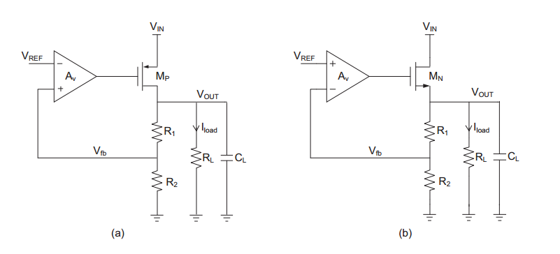
1.1. Static/Steady-State Parameters
1.1.1. Drop-out Voltage
The drop-out voltage is defined as the minimum voltage difference between VIN and VOUT (Figure 2.1) to maintain an intended voltage regulation [4_yang_li_thesis]. A linear regulator which can operate in low drop-out voltage regulation is commonly named as low drop-out regulator (LDO). The application intended for the proposed voltage regulator has quite a big dropout, that allows us to use an NMOS pass device without a charge pump, as such it does not qualify it as a Low-Dropout Regulator.
1.1.2. Quiescent Current
The quiescent current (IQ) is defined as the total current drawn by the voltage regulator from the preceding supply, minus the current that flows to the load. In other words it’s the current consumed by the control circuits. The power efficiency η of a linear regulator can be expressed in, where ILoad is current flowing into the load and Vdropout is the dropout voltage.
1.1.3. Line Regulation
Line regulation measures a voltage regulator’s ability to maintain a stable output voltage \(V_{out}\) despite static or low-frequency variations in its input supply voltage \(V_{in}\). It is quantitatively defined as the ratio of the change in output voltage to the change in input voltage:
Note: This is also frequently expressed as a percentage of the nominal output voltage per volt, i.e., \(\% / \text{V}\), or simply in \(\text{mV}/\text{V}\).
The input supply feeding the regulator is rarely perfectly stable. It often fluctuates due to a combination of factors, such as:
-
The line and load regulation limitations of the preceding supply regulator.
-
Thermal drift and bandgap reference inaccuracies.
-
Static offsets resulting from transistor mismatches.
-
AC ripple originating from upstream switching regulators or rectifiers.
Ideally, the regulated output voltage should remain constant at its target value across the entire operating range of the input voltage. This ideal behavior holds true until the input voltage drops too close to the output voltage, reaching the "dropout" threshold. For an NMOS pass-transistor topology, as \(V_{in}\) decreases toward this limit, the gate-driving stage (often an error amplifier powered by \(V_{in}\) or a charge pump) runs out of voltage headroom to sufficiently command the NMOS gate. This pushes the NMOS pass element from its active (saturation) region into the triode region, causing the regulator to drop out of regulation.
However, even within the normal operating range, the output voltage is not fully immune to input fluctuations. Due to the finite loop gain of the feedback network, the output voltage varies slightly in response to changes in the input supply.
Specifically, the closed-loop line regulation is determined by the open-loop sensitivity of the regulator divided by the feedback loop gain:
where \(T(s)\) represents the loop gain of the regulation loop (the product of the error amplifier gain, the pass element gain, and the feedback factor).
In an open-loop condition, a change in \(V_{in}\) directly affects the output through the finite output impedance (\(r_{ds}\)) and channel-length modulation of the pass transistor, as well as through any body effect (particularly in NMOS source followers). Because the loop gain \(T(s)\) is finite, and further decreases at higher frequencies, the error amplifier cannot completely suppress these perturbations, leading to a measurable shift in \(V_{out}\) when \(V_{in}\) changes. To achieve superior line regulation, the low-frequency gain of the error amplifier must be maximised.
Small-Signal Analysis of the Line Regulation of a voltage regulator with an NMOS Pass device
To establish a formal quantitative analysis of the line regulation for an NMOS-based regulator, we evaluate its small-signal model. The analysis starts from the regulator model of Figure 1(b). Let the transconductance of the NMOS pass transistor \(M_N\) be \(g_{mn}\), its output resistance be \(r_{ds\_n}\), and the open-loop voltage gain of the error amplifier be \(A_{OTA}\).
The feedback network consists of a resistive divider \(R_1\) and \(R_2\), while \(R_L\) represents the load resistance. The small-signal relationship describing the propagation of an input variation \(\Delta V_{in}\) to the output variation \(\Delta V_{out}\) is given by:
By solving this equation for the transfer function \(\Delta V_{out} / \Delta V_{in}\), the exact expression for the line regulation of the NMOS regulator is derived as:
Under typical operating conditions, the loop gain is high, and the expression could be simplified to:
1.1.4. Physical Comparison: NMOS vs. PMOS Regulators
The simplified formulation reveals that the line regulation of the NMOS regulator is inversely proportional to both the amplifier’s open-loop gain \(A_{OTA}\) and the intrinsic gain of the NMOS pass transistor, \(g_{mn} r_{o,n}\).
Compared to a conventional PMOS-based regulator—which typically exhibits a line regulation of approximately:
the NMOS regulator improves line regulation performance by a factor of \(g_{mn} r_{o,n}\).
This key performance advantage is physically intuitive when considering the topology of the pass device. The NMOS pass transistor effectively functions as a "cascode" transistor situated between the noisy input supply \(V_{in}\) (connected to its drain) and the output node \(V_{out}\) (connected to its source). Because any voltage variation applied to the drain of a regulated NMOS transistor is inherently shielded by the channel, its equivalent variation at the source node is heavily attenuated by the transistor’s intrinsic gain \(g_{mn} r_{o,n}\) in addition to the closed-loop feedback gain \(A_{OTA}\).
1.2. Load Regulation
Load regulation measures a voltage regulator’s ability to maintain a stable output voltage in the presence of static or low-frequency variations in the load current. It is mathematically defined as the ratio of the static output voltage variation (\(\Delta V_{out}\)) to the static load current change (\(\Delta I_{out}\) or \(\Delta I_{load}\)):
This ratio essentially represents the closed-loop output impedance (\(R_{out\_closed\_loop}\)) of the regulator. A lower closed-loop output impedance corresponds to superior load regulation, meaning lower static output voltage deviations due to varying load currents.
1.2.1. Small-Signal Analysis of the NMOS Regulator
To analyze the load regulation of the NMOS regulator quantitatively, we utilize the small-signal representation based again on the regulator model from Figure 1(b). In this model, \(A_{OTA}\) is the open-loop gain of the error amplifier, \(g_{mn}\) is the transconductance of the NMOS pass element, and \(I_{load}\) represents the load current flowing through the load resistance \(R_L\).
When the load current changes by a small-signal amount \(\Delta I_{load}\), it induces a corresponding shift in the output voltage \(\Delta V_{out}\). The small-signal relationship describing the impact of this load current variation on the output voltage is formulated as:
By rearranging the terms to isolate the transfer function \(\Delta V_{out} / \Delta I_{load}\), we obtain the closed-loop expression:
Under typical operating conditions where the loop gain is significantly high (such that \(\frac{R_2}{R_1 + R_2} A_{OTA} \gg 1\)), this expression simplifies to:
The negative sign indicates that an increase in load current (current drawn out of the regulator) causes a small, proportional drop in the output voltage.
1.2.2. Physical Intuition and Feedback Mechanism
The small-signal analysis demonstrates that the load regulation of the NMOS regulator depends on both the amplifier open-loop gain (\(A_{OTA}\)) and the transconductance of the NMOS pass device (\(g_{mn}\)).
This dependency is directly linked to the properties of negative shunt feedback:
-
Open-loop Output Impedance: The pass device in an NMOS regulator behaves as a source follower. Looking into the source of the NMOS transistor, the open-loop output impedance is approximately:
\[R_{out, ol} \approx \frac{1}{g_{mn}}\] -
Loop Gain: The feedback loop consists of the resistor divider ratio \(\beta = R_2 / (R_1 + R_2)\), the error amplifier gain \(A_{OTA}\), and the pass-device source-follower gain (which is approximately unity). This yields a loop gain of:
\[T \approx \frac{R_2}{R_1 + R_2} A_{OTA}\] -
Closed-loop Output Impedance: The voltage-sensing shunt-feedback at the output node reduces the output impedance by a factor of \(1 + T\):
\[R_{out, cl} = \frac{R_{out, ol}}{1 + T} \approx \frac{1/g_{mn}}{\frac{R_2}{R_1 + R_2} A_{OTA}} = \frac{1}{\frac{R_2}{R_1 + R_2} A_{OTA} g_{mn}}\]
This derivation confirms that to minimize output voltage variations under fluctuating load conditions, the design should focus on maximizing both the error amplifier’s open-loop gain (\(A_{OTA}\)) and the transconductance (\(g_{mn}\)) of the NMOS pass element.
1.3. Temperature Drift
Temperature variations directly affect the output voltage accuracy of a linear regulator. The thermal stability of a regulator is quantified by its temperature coefficient (\(TC\)), which is defined as the fractional change of the output voltage in response to a change in temperature [5 G. Rincon-Mora, Analog IC Design with Low-Dropout Regulators]. Typically expressed in percent per degree Celsius (\(\%/^\circ\text{C}\)) or parts per million per degree Celsius (\(\text{ppm}/^\circ\text{C}\)), the temperature coefficient is mathematically defined as:
Where:
-
\(\Delta T\) represents the change in temperature.
-
\(\Delta V_{ref}\) represents the variation in the reference voltage over temperature.
-
\(\Delta V_{os}\) represents the variation in the error amplifier’s input-referred equivalent offset voltage over temperature.
Based on the derivation above, the absolute value of the output voltage cancels out. This indicates that the regulator’s overall temperature coefficient is independent of the target output voltage setting. Instead, the thermal stability of the regulator is directly determined by two primary components:
-
The reference voltage temperature coefficient: \(\frac{\Delta V_{ref}}{V_{ref}\Delta T}\)
-
The input-referred offset voltage drift scaled by the reference voltage: \(\frac{\Delta V_{os}}{V_{ref}\Delta T}\)
To minimize temperature drift in practical linear regulator designs, it is necessary to utilize a highly stable bandgap reference with a low temperature coefficient, alongside an error amplifier optimized to minimize thermal offset drift (\(\Delta V_{os}/\Delta T\)) through a low mismatch optimized input pair, high DC open-loop gain and layout matching techniques.
1.3.1. Minimizing Thermal Drift in Linear Regulators
Achieving high-precision thermal performance in linear regulators requires addressing both the primary reference voltage source and the non-idealities of the feedback loop. This section examines the specific design and layout techniques used to mitigate these thermal effects.
1.3.2. Bandgap Reference (BGR) Temperature Coefficient
The bandgap reference provides the baseline voltage \(V_{ref}\). Standard bandgap circuits achieve first-order temperature cancellation by summing two voltages with opposite thermal behaviors:
-
CTAT (Complementary-to-Absolute-Temperature): The base-emitter voltage of a bipolar junction transistor (\(V_{BE}\)) decreases linearly with temperature, typically at a rate of approximately:
\[\frac{\partial V_{BE}}{\partial T} \approx -2 \, \text{mV}/^\circ\text{C}\] -
PTAT (Proportional-to-Absolute-Temperature): The thermal voltage \(V_T = k_B T / q\) increases linearly with temperature, exhibiting a temperature coefficient of:
\[\frac{\partial V_T}{\partial T} \approx +0.086 \, \text{mV}/^\circ\text{C}\]
By scaling and summing these two voltages, a first-order temperature-compensated reference voltage of approximately \(1.2 \, \text{V}\) (or lower for fractional bandgaps) is produced:
where \(K\) is a constant defined by transistor sizing and resistor ratios. Even with this first-order compensation, residual second-order temperature effects remain that influence the bandgap’s temperature coefficient.
1.3.3. Mitigating Error Amplifier Offset Drift
Even with a perfectly stable reference, any thermal drift in the error amplifier’s input-referred offset voltage (\(\Delta V_{os}/\Delta T\)) propagates directly to the output. This offset is composed of both random and systematic components.
Random Offset and Pelgrom’s Law
Random offset arises from local, microscopic variations in transistor physical dimensions, doping concentrations, and oxide thicknesses. In the input differential pair of the error amplifier, threshold voltage (\(V_{th}\)) mismatch is the dominant driver of offset drift.
According to Pelgrom’s Law, the standard deviation of threshold voltage mismatch (\(\sigma_{\Delta V_{th}}\)) is inversely proportional to the square root of the active gate area:
where \(A_{Vth}\) is a technology-dependent constant, while \(W\) and \(L\) represent the width and length of the input transistors.
To minimize random thermal drift:
-
Large Device Sizing: Designers use large gate areas (high \(W \cdot L\)) for the input pair. Increasing the area averages out local channel fluctuations, lowering both the nominal offset and its corresponding drift over temperature.
Systematic Offset and High DC Open-Loop Gain
Systematic offset occurs due to circuit design asymmetries, such as drain-to-source voltage (\(V_{DS}\)) imbalances in the input pair or load current mirrors. Because these biases change dynamically with temperature, they introduce systematic drift.
Maintaining a high DC open-loop gain (\(A_{OL}\)) in the error amplifier minimizes this systematic drift by heavily attenuating closed-loop gain errors:
A high \(A_{OL}\) ensures that the amplifier behaves closer to its mathematical ideal, ensuring that thermal variations in internal node voltages do not manifest as a shifting input-referred offset.
1.3.4. Precision Calculation
Parameter Vout_static Typical 1.5 ± 3% → min: 1.455V, max: 1.545V
Vref_ideal = 1.2V
1.4. Transient Response and Slew Rate
The Slew Rate directly impacts the transient response of the voltage regulator, which is crucial for maintaining the output voltage within acceptable limits under varying load conditions. In automotive applications, where power efficiency and reliability are paramount, optimizing the Slew Rate can lead to improved performance and reduced power consumption.
Usually, for a step in the output load current, from 0 to a maximum value \(I_{load\_max}\), the maximum output voltage variation \(\Delta V_{out\_max}\) can be expressed as:
At the first moment of the current step, the control loop has not had time to react. The extra current demand, \(\Delta I_{load\_max}\), is supplied entirely by the output capacitor, \(C_{load}\). This causes the output voltage to start dropping at a rate: \(\frac{\Delta I_{load\_max}}{C_{load}}\). The output voltage will stop dropping at the instant when the power stage supplies exactly the same value of the demanded load current. Until then, the loop will try to react and restore the output voltage, but the response time is limited by the loop bandwidth, \(BW_{cl}\). During this time, the output voltage will have dropped by an amount: \(\frac{\Delta I_{load\_max}}{C_{load} \cdot BW_{cl}}\). After the loop starts to react, the gate voltage of the pass transistor will begin to change. The time it takes for the gate voltage to change by the required amount such as to supply the demanded load current can be written as: \(t_{sr} = \frac{\Delta V_{gate}}{SR_{Gate}} = \frac{\Delta V_{gate} \cdot C_{gate}}{I_{SR}}\).
As can be seen from the equation the loop bandwidth and the slew rate of the OTA play an essential role in shaping the transient response of the voltage regulator.
If we consider the NMOS voltage regulator as a two-pole system with the dominant pole at the power stage’s node and the second pole at the output node, the worst case stability scenario is at low load current and high output capacitance. The value of the gate capacitor should be chosen such that stability at the lowest required load current and maximum load capacitance is ensured. From this design constraint, there is an effective upper bound on the possible bandwidth of the control loop.
The other parameter that we are free to tune is the Slew Rate of the OTA. Indeed, increasing the Slew Rate will reduce the time it takes for the gate voltage to change, thus improving the transient response of the regulator.
Figure 2 shows the difference in transient response between two OTA models with different Slew Rates. The OTA with a higher Slew Rate (5uA/V) shows a faster recovery to the nominal output voltage after a load jump compared to the OTA with a lower Slew Rate (2uA/V). This demonstrates the importance of optimizing the Slew Rate in the design of voltage regulators, especially in applications where rapid load changes are expected.
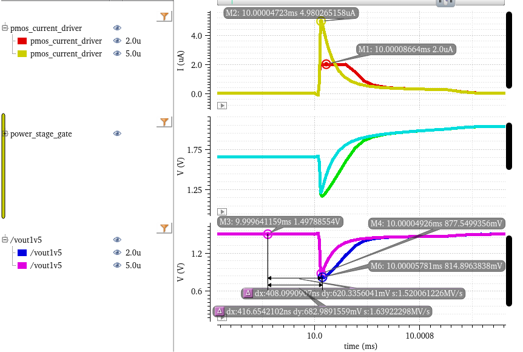
However, we must keep in mind the conditions under which eq. (1) was derived and remains valid. The equation assumes that the output current exhibits both a hard saturation on the bias current and a linear dependence on the input differential voltage. Therefore, increasing the Slew Rate requires more current from the OTA, which leads to increased power consumption. Therefore, there is a trade-off between transient response and power efficiency that must be carefully balanced in the design of the voltage regulator, for class-A type OTAs.
For class AB OTAs, which typically exhibit a nonlinear relationship between the output current and the input differential voltage, the situation differs. In these devices, the slew rate can be enhanced without significantly raising the quiescent current, improving the transient response without a substantial power penalty. Figure 3 illustrates the differing output current behaviors of a linear and a quadratic OTA model. The linear model demonstrates hard saturation at the 2 µA bias current when the output voltage drops below 1 V. Conversely, the quadratic model initially presents a lower slope, resulting in a lower transconductance for minor voltage deviations, but this slope increases rapidly. Consequently, its output current overtakes that of the linear model for voltages below 1.025 V. (It should be noted that no current saturation was incorporated into this simplified quadratic model). Therefore, boosting an OTA’s slew rate via a nonlinear stage can improve transient behavior and power efficiency, even if the unity-gain bandwidth is held constant.
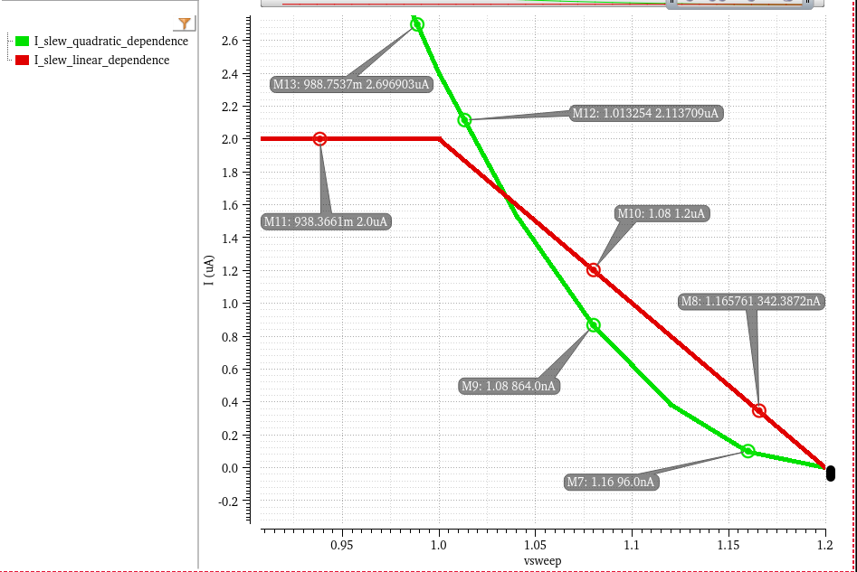
The resulting transient response of both ota models to a load jump is shown in Figure 4. The OTA with the nonlinear output current dependence on the input differential voltage shows a smaller undershoot and a faster recovery to the nominal output voltage after a load jump compared to the OTA with a linear output current dependence, even though both OTAs have the same unity-gain bandwidth. This demonstrates that optimizing the Slew Rate through nonlinear stages can significantly enhance the transient response of voltage regulators without necessarily increasing power consumption.
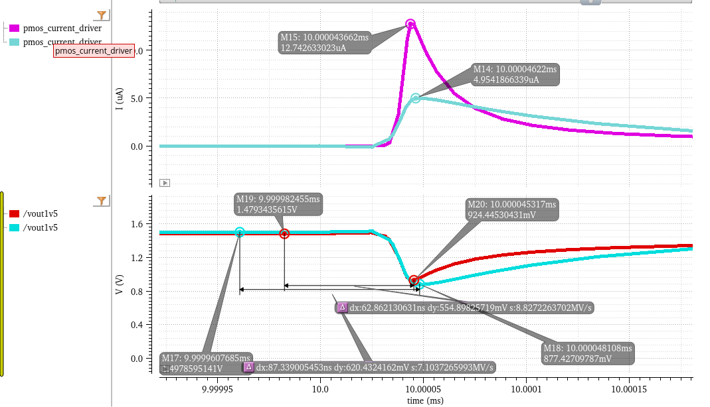
1.5. Stability Analysis of Dual Loop Systems
Analyzing the stability of systems with multiple interacting feedback loops can be challenging. Traditional methods developed for single-loop systems cannot always be directly applied and finding the right point to break all loops is not possible for all such systems. Signal Flow Graphs (SFGs) offer a powerful, visual approach to characterize linear circuit networks with loading effects at the input and output ports automatically included in the analysis [Ochoa, 1998, A systematic approach…]
An SFG visually captures the cause-and-effect relationships within a linear system and is equivalent to the Nodal Analysis Matrix Equation [Choma, Signal flow analysis…]:
where Y is the nodal admittance matrix, V is the vector of node voltages and I is the vector of independent current sources. Mason 's Gain formula provides a general method for finding the transfer function between two nodes once the graph has been defined. The determinant of the graph is mathematically equivalent to the determinant of the admittance matrix derived from nodal analysis (1).
Just as the admittance matrix characteristic equation d`efines the system natural frequencies, the determinant of the graph contains information about the system poles and zeroes since it defines the loop gain of the system.
The SFG together with the DPI Technique encompass an analysis method for generating the graph of the system as a direct interpretation of the circuit topology. Once the Signal Flow Graph has been found, Mason’s rule and other well-known rules for collapsing graphs can be applied to produce the desired transfer function. The technique of DPI analysis is based on the transformation of circuit ports to their Norton equivalent representation and on the sequential application of superposition [1].
These circuit analysis techniques having been used for the VREG in Fig. 1 give rise to the SFG in Fig. 2 and lead to the following loop gain equation:
Equation 3 indicates a three pole system with a pole associated with each of the three nodes denoted in Fig 1, the DC loop gain determined by the voltage gains of the two OTAs within the two signal paths and a zero that appears due to the feedforwarding action of the inner loop on the outer loop. Another zero appears because of the CGS of the power stage. That same parasitic capacitance, if viewed bilaterally, yields a rhp pole, as indicated by the negative term seen in (3). The following inequalities turn into design guidelines:
Firstly, looking back to why we chose this configuration in the first place, we should place a condition on the two loops bandwidths:
The DC gain we would like to be as high as possible:
To maintain stability, we need one zero in the transfer function to occur before the unity gain frequency, where the UGF has been computed as of a two-pole system with no dominant pole:
One can also obtain this inequality by following the procedure described in [3]: analyse the dual-loop system by breaking the inner loop first and then evaluating the outer loop with the inner loop replaced with its closed-loop equivalent as stated by classical feedback theory. Last but not least, to ensure a suitable phase margin, the pole associated with the output node should be pushed up in frequency at least a decade above the unity gain bandwidth of the system:
These four inequalities (4) - (7) have been put to use by designing a Dual Loop Voltage Regulator that is stable across a wide load current range: 0 - 10mA with a worst-case PM above {20}^\circ as shown in Fig 3
1.6. TODO:
-
stability analysis
-
evaluate different class AB OTA topologies
-
Pass Device sizing
2. Chapter 4: Implementation
2.1. Dual Loop Architecture
To be able to improve on both static precision and dynamic performance, a dual loop architecture was chosen: The outer loop was optimized for high DC gain through a double-cascoded symmetrical OTA with an input differential pair sized for low mismatch. [During steady‑state operation, the high gain of the symmetrical outer OTA dominates the CCII inner feedback loop, allowing the 1.5 V regulator to achieve under 2% precision in MC300 simulations.] To maintain optimal transient performance, high DC gain and current efficiency, a biasing circuitry with a PTAT component and an adaptive component that increases with load current has been used.
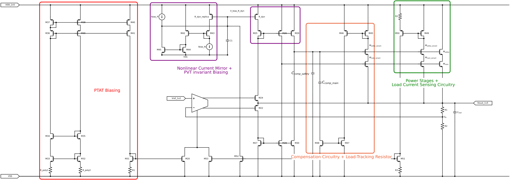
2.2. Inner OTA Design and Slew Rate Enhancement
For the Inner OTA a second generation current conveyor (CCII) was chosen. The design mirrors the bipolar variant of Fabre [A Precise Macromodel for Second Generation Current Conveyors Alain Fabre] [Translinear current conveyors implementation Fabre], using the same translinear loop as its core. This design was chosen over the Barthelemy variant [Barthelemy H (1997) Low-output-impedance class AB bipolar voltage buffer] for its better quiescent current control over PVT. [insert plot of quiescent current variation for both topologies]
The CCII has its Y voltage input is driven by the symmetrical outer OTA, while its X current input is directly connected to the regulator output. Owing to its simplicity, class AB behavior, and current feedback operation, the CCII inner loop can be optimized for wide bandwidth and high slew rate, allowing it to take over the system response during transient events. Furthermore, a nonlinear PMOS current mirror that exploits the transition from the triode region to saturation of a resistor-emulating PMOS [4] has been used to further increase the positive slew rate of the inner OTA, ensuring 221mV undershoots in full load jumps between 100nA and 10mA over PVT. R_dyn is biased at the edge of the triode region in steady state, but when a sufficiently high current flows through M24 during a transient undershoot event, R_dyn will enter the saturation region to reach an operating point with a higher drain current, but with the same VGS . This mirrors gliding up the Y-axis of the ID/VDS graph of a MOSFET. A slew rate comparison between a current conveyor with a classical and a nonlinear current mirror is shown in Fig. 2. The regulation loop response to a load jump from 100nA to 10mA with the two aforementioned current mirrors is also shown in Fig. 3.
2.3. Outer OTA Design and Loop Stability
The outer OTA is a double-cascoded symmetrical OTA with an input differential pair sized for low mismatch biased in the subthreshold region. The design of the outer OTA was optimized for high DC gain, which is essential for achieving high precision in the voltage regulator. The symmetrical architecture of the OTA helps to minimize offset while the double-cascoding technique allows for a significant increase in gain without sacrificing bandwidth. The single-stage topology was chosen to minimize the quiescent current and the number of poles in the system, thus improving stability margins.
2.4. PTAT Current reference
2.5. Initial PTAT current reference design
The PTAT biasing circuitry is based on the classical ΔVGS PTAT core. The extra resistor R_poly2 has a PTAT behaviour, just like R_ploy1, but it has a greater variance with temperature. In this way, the output PTAT bias current has a lower process corner dependence.
2.6. Improved PTAT current reference design
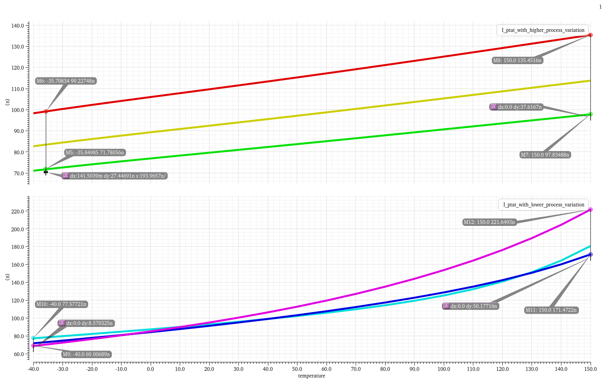
2.7. Adaptive Biasing
The adaptive biasing current keeps the regulator’s efficiency high at minimum loads and increases the Unity Gain frequency, and Stability margins at higher loads. It also allows the outer loop gain to surpass 80dB DC loop gain above 200 uA and 90dB above 2mA. With the help of a variable resistor, implemented through M48, that generates a load-tracking zero, stability is ensured for loads between 1u and 10mA and 0 and 10nF, load current and capacitance, respectively.
3. Chapter 4: Experimental Results
3.1. VREG Startup and Disable
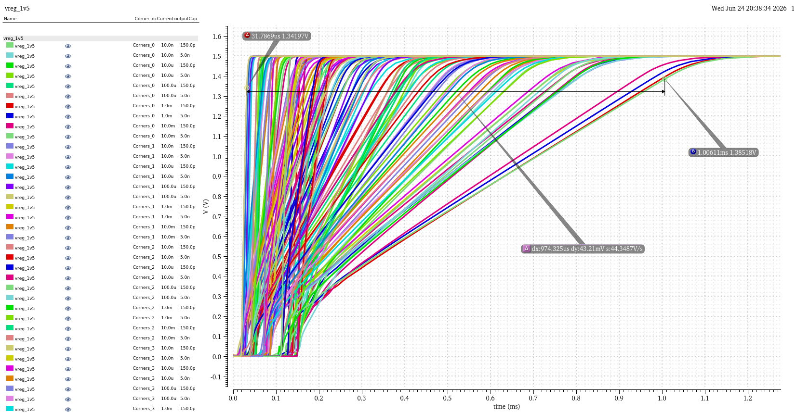
As can be seen from Figure 7 , the 1V5 Reg startup time varies dramatically, mostly due to the load current the VREG is required to supply directly from the startup and the PVT conditions. The startup time is also influenced by the load capacitance.
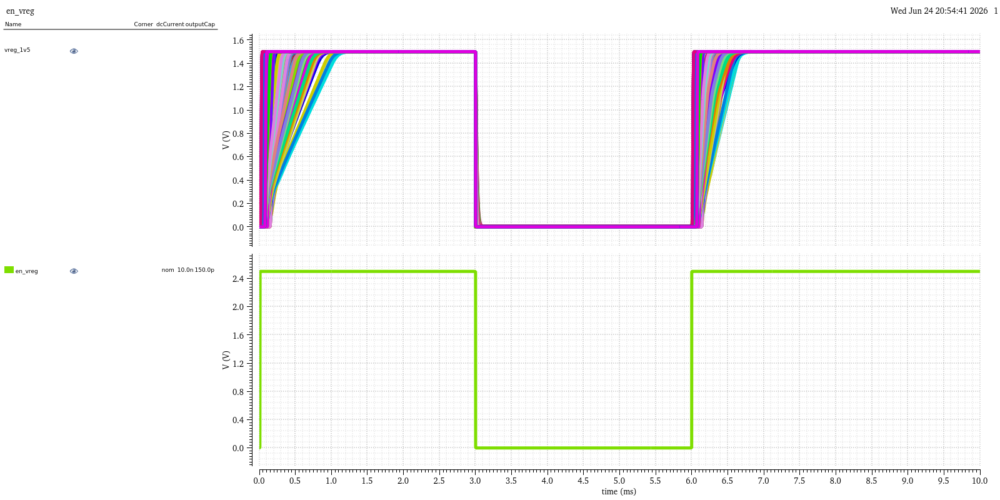
The disable behaviour of the 1V5 Reg is also influenced by the load current and load capacitance. The disable time is generally shorter than the startup time, but it can still vary significantly depending on the PVT conditions and the load current. The longest disable time is observed when the load current is low (10nA) and the load capacitance is large, as the pulldown switch needs to discharge the load capacitance before it can fully disable.
3.2. Static and Dynamic Measurements
As can be seen from Figure 9, the regulator manages to achieve a maximum overshoot of 50mV for positive line jumps from 2.25V to 3.6V at 10mA. The maximum undershoot for negative line jumps from 3.6V to 2.25V is 34mV at 10mA. As far as the load transient performance is concerned, the maximum overshoot.
3.2.1. Plots
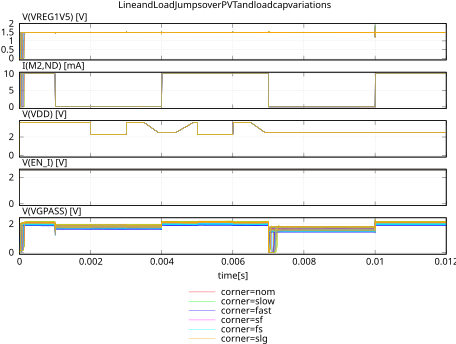
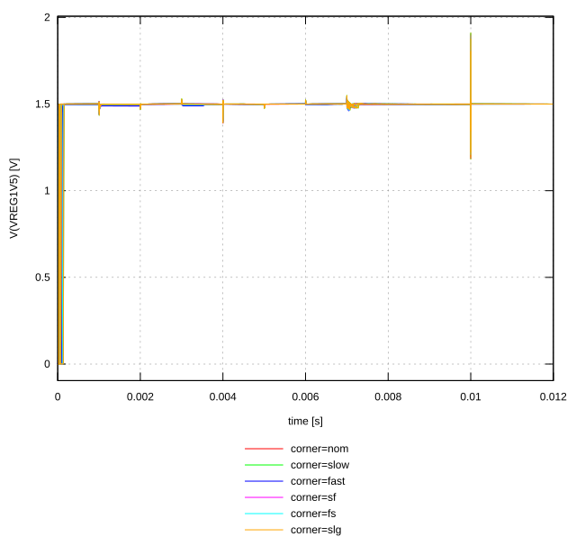
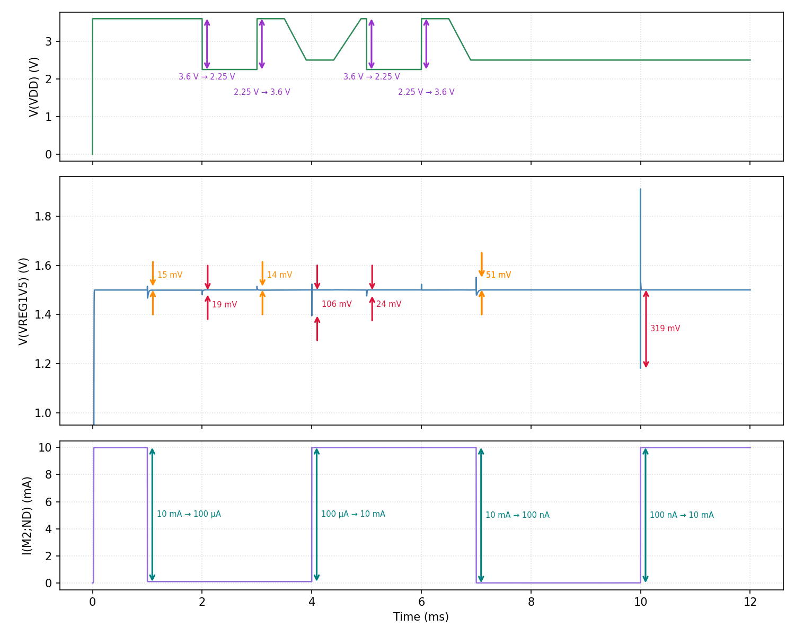


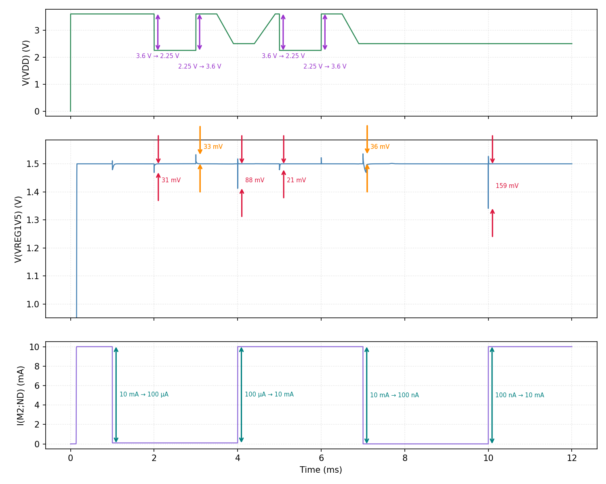

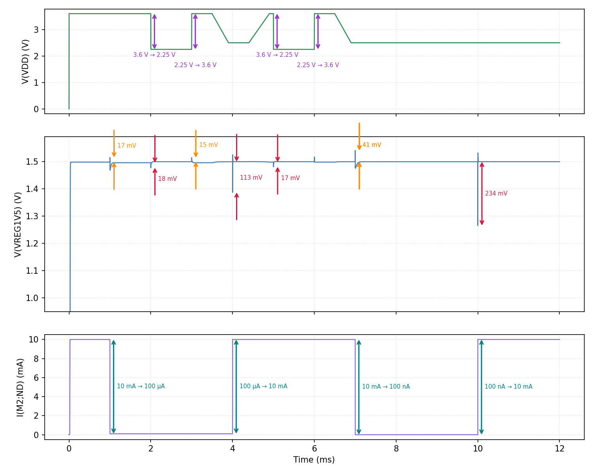
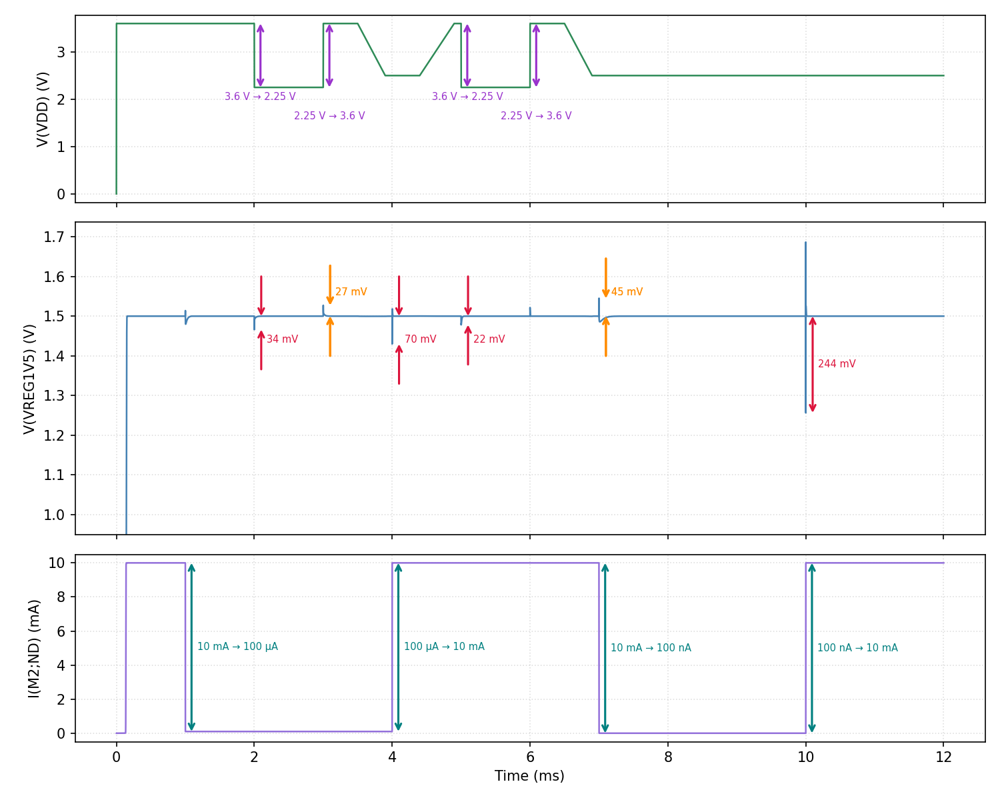
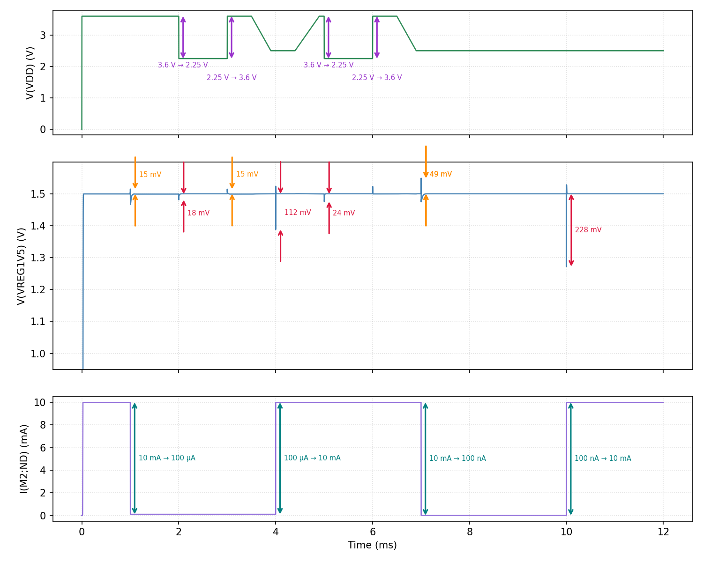